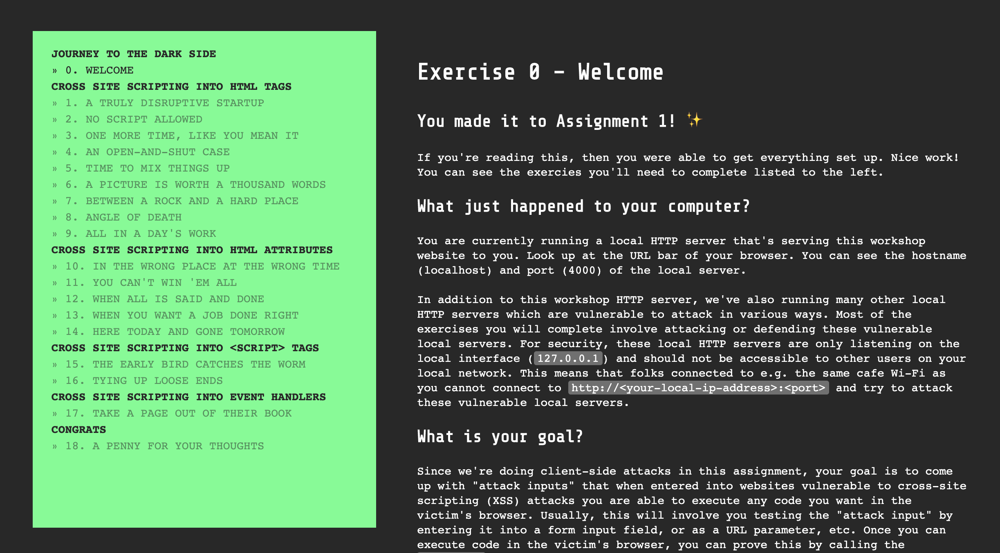

CS 253 Web Security
Assignment 1 – Journey to the Dark Side 🌘
- Points: 60
- Due: Friday, October 18 at 5:00pm
Welcome to Assignment 1 for CS 253: Web Security. ✨
We're doing client-side attacks! This assignment is all about Cross Site Scripting (XSS) vulnerabilities. Your goal is to come up with "attack inputs" that when entered into vulnerable websites allow you to execute code in the target's browser.
With Reflected XSS, you want to find a way to encode the attack input into a URL that can be sent to a target. When the URL is visited, your attack input is extracted from the URL by the server-side (or potentially client-side) code and executed in the target's browser.
With Stored XSS, you want to find a way to get your attack input stored more permanently, e.g. in the server's database, so that when your target visits a page constructed using this data at some point in the future, your attack code will execute in their browser.
The assignment takes the form of an interactive workshop that you'll run in your browser. This is what it looks like:

Prepare
Check your Node.js version
You should already have Node.js installed from the last assignment. For this assignment, it's highly recommended to use Node.js 12. Open your terminal and run this command to confirm you're running some version 12.x.x:
node --versionIf not, you can install Node.js from the official site.
Get the starter code
Run this command to clone the code with git:
git clone https://github.com/stanford-web-security/assign1.gitEnter the folder you just created:
cd assign1Install the necessary local dependencies with npm:
npm installStart the assignment
Run the local server:
npm startYour browser should open up to http://localhost:4000 where you can begin the assignment.
Submit
Before you submit
Ensure that the sanity tests pass:
npm testThis command just runs a basic sanity test that ensures your project passes npm run lint, has the right folder structure, and doesn't have any blank required files. If npm test doesn't report any errors that doesn't necessarily mean that you've solved every exercise perfectly!
🌟 PRO TIP: You can automatically fix most lint errors by running:
npm run lint-fixGradescope
We'll use Gradescope for submissions. Enroll with the code 97BGZB.
The moment of truth
When you're ready to submit your work, you'll upload the src/ folder to Gradescope. It should include two files (SOLUTIONS.md and SURVEY.md).
You should submit early and often! There's no downside to repeatedly submitting your assignment.
Questions?
Come to office hours or post in Piazza.